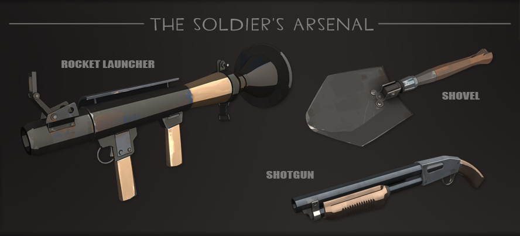

| Location of Origin | Midwest, USA |
|---|---|
| Role | Offense |
Despite his fervent desire to serve in World War 2, the Soldier was turned down by every branch of the American military. Unfazed, he purchased his own flight to Europe. The Soldier learned how to load and shoot a variety of weaponry after reaching and ultimately discovering Poland, and then went on a Nazi killing rampage for which he was awarded various medals that he invented and made himself. When he learned that the war had finished in 1949, his rampage came to an immediate end.
 Full Soldier Loadout